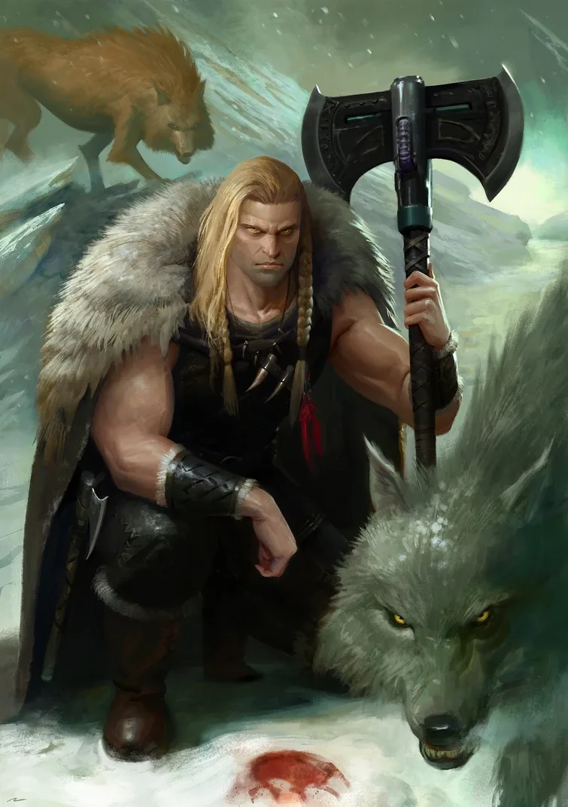

01ภาพรวม


02ต้นกำเนิด — ลูกหมาป่าแห่ง Fenris
แคปซูลตกบนดาวน้ำแข็ง Fenris ทารกถูกแม่หมาป่ายักษ์เลี้ยง ก่อนที่ชนเผ่ามนุษย์จะพาไปอยู่ด้วย เขาเติบโตเป็นนักรบในตำนานและขึ้นเป็นราชา
03พบจักรพรรดิ
จักรพรรดิมาถึงในปี 819.M30 ปลอมตัวเป็นคนแปลกหน้าและท้าแข่งกับ Russ ทั้งกินดื่มและต่อสู้ Russ แพ้แล้วหัวเราะยอมรับ สาบานภักดีและรับ Legion ที่ 6
04เพชฌฆาตของจักรพรรดิ
Space Wolves ได้รับบทบาทพิเศษ — ถูกส่งไปจัดการ Legion ที่ทำผิด เช่น เหตุการณ์ "Night of the Wolf" กับ World Eaters และการนำ Magnus มาไต่สวน
05ศัตรูของเวทมนตร์และการหลอกลวง
Russ เกลียดพ่อมดและยุทธวิธีหลอกล่อ ทะเลาะกับ Magnus เรื่องพลังจิตและกับ Alpha Legion เรื่องการรบแบบไร้เกียรติ มีเรื่องบาดหมางกับ Lion เป็นตำนาน
06Burning of Prospero
จักรพรรดิสั่งให้นำ Magnus มาไต่สวน แต่ Horus บิดคำสั่งเป็น "ทำลาย" Russ เผา Prospero และหักหลังของ Magnus ต่อมาเขาถูก Alpha Legion โจมตีที่ Alaxxes Nebula และมาถึง Terra ช่วงท้ายของสงคราม
07หายตัวไป
ราวปี 211.M31 Russ หายตัวไปหลังเห็นนิมิต หลายตำนานว่าเขาเข้าไปใน Eye of Terror ทิ้งคำสัญญาว่าจะกลับมาในศึกสุดท้ายที่เรียกว่า Wolftime
08นิสัยและบุคลิก
- ห้าวหาญ ชอบงานเลี้ยงและเสียงหัวเราะ
- ตรงไปตรงมา เกลียดการหลอกลวง
- ภักดีต่อบิดาอย่างไม่มีเงื่อนไข
- ปกป้องคนธรรมดา
09อาวุธและยุทโธปกรณ์
10ความสัมพันธ์กับจักรพรรดิ

จักรพรรดิแห่งมนุษยชาติ
บิดาผู้สร้างไม่มีบันทึก
ไม่มีบันทึก
Leman Russ คิดอย่างไรกับจักรพรรดิ
- พบกันครั้งแรกแพ้การแข่งขันแล้วนับถือบิดาทันที
- Great Crusadeภูมิใจในบทบาทเพชฌฆาตของบิดา
- หลังสงครามตามหาทางช่วยบิดา — หนึ่งในทฤษฎีการหายตัวไป
จักรพรรดิคิดอย่างไรกับ Leman Russ
- ภาพรวมจักรพรรดิไว้ใจ Russ ให้ทำงานที่ไม่มีใครอยากทำ นั่นคือการลงโทษพี่น้องของเขาเอง
11ความสัมพันธ์กับพี่น้อง Primarch ทุกคน
มุมมองของ Leman Russ ต่อพี่น้องแต่ละคน และมุมมองของพี่น้องต่อเขา — เรียงตามหมายเลข Legion กดชื่อเพื่อไปอ่านเรื่องของพี่น้องคนนั้น ดูภาพรวมทุกคู่ได้ที่ แผนผังความสัมพันธ์ของ Primarch

Lion El'Jonson
ซับซ้อนแข่งขันกับ Lion ตลอดเวลา และเจ็บใจที่ถูกแย่งเกียรติ
รำคาญความใจร้อนของ Russ แต่นับถือในฐานะนักรบ
- Great Crusade — Feud of Dulanผู้ปกครองดาว Dulan ดูหมิ่น Russ Russ ขอนำทัพบุกเอง แต่ Lion นำทัพเข้าไปฆ่าผู้ปกครองก่อน Russ โกรธจนต่อยหน้า Lion — กลายเป็นดวลที่ Dark Angels และ Space Wolves เล่าตำนานคนละแบบ
- HeresyRuss ช่วยห้ามไม่ให้ Lion กับ Corax ทะเลาะกันที่ Deliverance
- ท้ายสงครามทั้งสอง Legion กลับมารวมเป็นพี่น้องร่วมรบ ตำนานเล่าว่าแม้ Horus ยังหวั่น Russ ได้ Wolf Blade และ Lion ได้ดาบที่คืนดีกัน
- ปัจจุบันบางตำนานว่า Russ หายเข้า Eye of Terror เพื่อตามหา Lion เพื่อนและคู่แข่งเก่า

Fulgrim
ไม่มีบันทึก- ภาพรวมไม่มีบันทึกเหตุการณ์สำคัญระหว่างทั้งสองโดยตรงในเนื้อเรื่องที่เผยแพร่ ทั้งคู่อยู่คนละฝ่ายในสงคราม Horus Heresy

Perturabo
ตึงเครียดไม่มีบันทึกความรู้สึก
ขมขื่นที่ Russ ได้รับอนุญาตไม่ต้องแบ่งกองทัพ ขณะที่ตัวเองต้องแบ่ง
- Great CrusadePrimarch บางคนอย่าง Russ, Vulkan และ Magnus ปฏิเสธการแบ่งกองกำลังไปรักษาการณ์ ขณะที่ Perturabo ต้องทำตามอย่างขมขื่น

Jaghatai Khan
ตึงเครียดหงุดหงิดกับ Khan
ไม่ชอบความใจร้อนของ Russ และปฏิเสธคำขอของเขา
- Great Crusadeคนมักเปรียบ White Scars กับ Space Wolves ว่าป่าเถื่อน ซึ่ง Khan ไม่ชอบ
- Heresy — Chondaxข่าวลือสับสนว่า Russ ทรยศ Russ ขอให้ Khan ช่วยต่อต้าน Alpha Legion Khan ปฏิเสธและขอไปหาคำตอบเอง

Rogal Dorn
นับถือเคารพความเด็ดขาดของ Dorn
ร่วมต่อต้าน Codex ด้วยกัน
- Great CrusadeRuss บรรยาย Dorn ว่า "รวดเร็วและไม่ปรานีดั่งคมขวานที่ตกลงมา"
- หลังสงครามDorn, Russ และ Vulkan ต่อต้าน Codex Astartes จนจักรวรรดิเกือบเกิดสงครามกลางเมืองอีกครั้ง

Konrad Curze
ไม่มีบันทึก- ภาพรวมไม่มีบันทึกเหตุการณ์สำคัญระหว่างทั้งสองโดยตรงในเนื้อเรื่องที่เผยแพร่ ทั้งคู่อยู่คนละฝ่ายในสงคราม Horus Heresy

Sanguinius
สนิทมากรักและนับถือ Sanguinius
หนึ่งในพี่น้องที่ใกล้ชิดที่สุด
- Great CrusadeSanguinius สนิทที่สุดกับ Horus, Russ และ Khan — Blood Angels และ Space Wolves สร้างมิตรภาพจากการรบ
- Siege of TerraRuss มาถึงหลังการดวลบน Vengeful Spirit จบลง Sanguinius ตายแล้ว

Ferrus Manus
ไม่มีบันทึก- ภาพรวมไม่มีบันทึกเหตุการณ์สำคัญระหว่างทั้งสองโดยตรงในเนื้อเรื่องที่เผยแพร่ ทั้งคู่อยู่ฝ่ายภักดี

Angron
ศัตรูต้องการหยุดความบ้าคลั่งของ World Eaters
ไม่ยอมรับอำนาจของ Russ
- Great Crusade — Night of the Wolfจักรพรรดิส่ง Russ ไปดาว Ghenna เพื่อหยุดการฝัง Butcher's Nails Angron ไม่ยอมรับและเตือนให้ Russ ถอย ทั้งสอง Legion ปะทะกัน — ตำนานที่ถูกเก็บเป็นความลับ
- Great CrusadeRuss, Angron และ Vulkan ถือว่าเป็นนักสู้ตัวต่อตัวที่เก่งที่สุดในหมู่พี่น้อง

Roboute Guilliman
ตึงเครียดไม่ชอบระเบียบและแผนการของ Guilliman
ยอมผ่อนให้ Space Wolves คง Great Company
- หลังสงครามRuss ต่อต้าน Codex Astartes สุดท้าย Guilliman ยอมให้ Space Wolves คงโครงสร้าง Great Company ไว้

Mortarion
ไม่มีบันทึก- ภาพรวมไม่มีบันทึกเหตุการณ์สำคัญระหว่างทั้งสองโดยตรงในเนื้อเรื่องที่เผยแพร่ ทั้งคู่อยู่คนละฝ่ายในสงคราม Horus Heresy

Magnus the Red
ศัตรูเกลียดเวทมนตร์และการหลอกลวงของ Magnus
แค้น Russ ที่ทำลาย Prospero
- Great Crusadeทั้งสองเกือบต่อยกันในภารกิจร่วมเรื่องพลังจิต Lorgar เข้ามาห้ามไว้
- NikaeaRuss เป็นผู้ต่อต้านพลังจิตเสียงดังที่สุด
- Burning of ProsperoRuss ถูกส่งไปนำตัว Magnus แต่ Horus เปลี่ยนคำสั่ง Russ เผา Prospero และหักหลังของ Magnus
- ยุคปัจจุบันMagnus บุก Fenris เพื่อแก้แค้น และถือ Space Wolves เป็นศัตรูอันดับหนึ่ง

Horus Lupercal
ซับซ้อนเคยเป็นพี่น้องที่เคารพ แต่ถูกหลอกใช้
หลอก Russ ให้เป็นเพชฌฆาตของ Magnus
- Great CrusadeHorus และ Lion เป็นสองคนที่มีชัยชนะมากกว่า Russ — ซึ่งทำให้ Russ หงุดหงิด
- HeresyHorus บิดคำสั่งของจักรพรรดิ ทำให้ Russ ทำลาย Prospero แทนการจับกุม
- Siege of TerraRuss รีบกลับ Terra แต่มาถึงหลัง Horus ตายแล้ว

Lorgar Aurelian
ซับซ้อนไม่มีบันทึกความรู้สึก
เคยห้ามการปะทะระหว่าง Russ กับ Magnus
- Great Crusadeบนดาว Shrike Lorgar เข้าไปห้าม Russ กับ Magnus ไม่ให้ต่อสู้กัน
- Heresyปีศาจเคยเตือน Lorgar ว่าถ้าเขาเข้าไปขวางการดวลของ Russ และ Magnus อาจถูกฆ่า

Vulkan
เพื่อน / พันธมิตรใช้ปืนที่ Vulkan ทำให้
ช่างที่ทำอาวุธให้ Russ
- Great CrusadeVulkan ปรับแต่ง Bolter ธรรมดาให้เป็นปืนพก Scornspitter ที่เหมาะกับมือของ Russ
- หลังสงครามทั้งสองยืนข้างเดียวกับ Dorn ต่อต้าน Codex ในช่วงแรก

Corvus Corax
เพื่อน / พันธมิตรปลอบ Corax ให้เก็บความขมขื่นไว้เป็นไฟ
ได้รับกำลังใจจาก Russ
- Heresy — DeliveranceRuss ห้าม Lion กับ Corax ไม่ให้ต่อสู้กัน และบอก Corax ให้ "เก็บความขมขื่นไว้ แต่อย่าให้มันดับ ใช้มันจุดไฟให้สู้ต่อ"

Alpharius Omegon
ศัตรูดูถูกการรบแบบหลอกล่อของ Alpha Legion
แค้น Russ ที่ดูถูกวิธีของพวกเขา
- Great CrusadeRuss วิจารณ์ Alpha Legion ว่าไร้เกียรติ สร้างความแค้นลึก
- Heresy — Alaxxes NebulaAlpha Legion ล้อม Space Wolves ที่อ่อนแอหลังเผา Prospero Terminator ของ Alpharius เทเลพอร์ตขึ้นยานธงของ Russ และ Russ ดูเหมือนจะได้ต่อสู้กับ Alpharius ที่ปลอมตัว
?Primarch ที่ II และ XI (ถูกลบ)
ไม่มีบันทึก- ภาพรวมทุกบันทึกของ Primarch ที่ 2 และ 11 ถูกลบ พี่น้องที่เหลือถูกห้ามพูดถึง ความสัมพันธ์ใด ๆ จึงไม่ปรากฏในประวัติศาสตร์